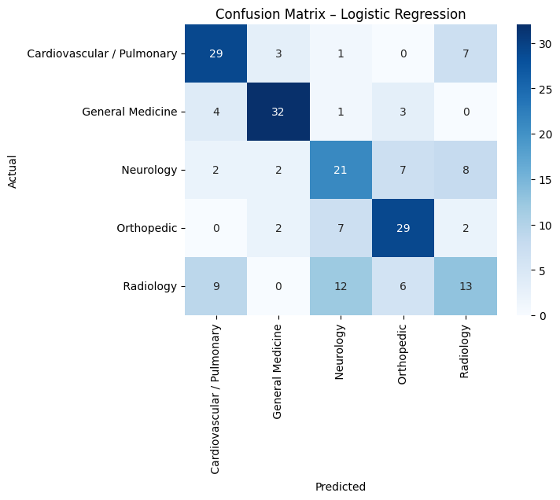
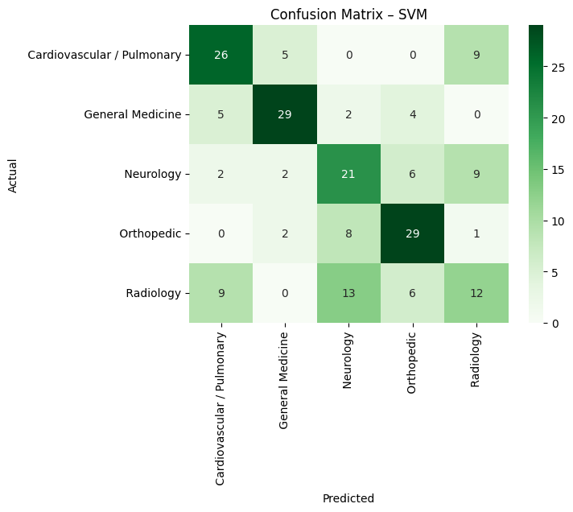

Key Results
0.620Best F1 - SVM + NER (No Negated)
1,000Medical Transcriptions
5Clinical Specialties
3Classification Pipelines Compared
Project Overview
Medical transcriptions are unstructured clinical text records — doctor notes, consultation summaries, and procedure reports. Automatically classifying these into clinical specialties could dramatically speed up routing, billing, and retrieval in healthcare systems.
This project tackled two core questions: Can we automatically determine the medical specialty of a transcription using only its text content? And does enriching the text with biomedical named entities and negation-aware filtering improve classification performance?
Three increasingly sophisticated pipelines were built and compared across Logistic Regression, SVM, and Random Forest classifiers.
Dataset & Specialties
1,000 medical transcription samples from 5 clinical specialties, with an average transcript length of 150-200 words. Each transcription represents a real clinical record — patient history, exam findings, diagnosis, and treatment notes.
Cardiovascular / Pulmonary
atrial, catheter, coronary, pulmonary, artery, stent, vein
Neurology
headache, EEG, seizure, brain, MRI, tumor, temporal
Radiology
ct, image, pelvis, region, exam, evidence, indication
Orthopedic
fracture, joint, hip, knee, disc, pain, lateral, screw
General Medicine
denies, tenderness, mg, history, blood, clear, regular
Why TF-IDF works well here: Medical specialties have highly distinctive vocabularies. "Atrial" and "catheter" almost exclusively appear in cardiovascular notes; "seizure" and "EEG" in neurology. TF-IDF captures these discriminating terms by upweighting words that are frequent in one specialty but rare across others.
Preprocessing Pipeline
1
Text Cleaning
Lowercase, remove punctuation and special characters, strip whitespace
2
Tokenization & Stopword Removal
Tokenize with spaCy, remove common English stopwords that carry no clinical meaning
3
TF-IDF Vectorization
Convert cleaned text to numerical feature matrix capturing term importance per specialty
4
NER + Negation
ScispaCy extracts medical entities; NegEx flags negated entities for removal in Approach 3
import spacy
import scispacy
from negspacy.negation import Negex
# Load biomedical NER model
nlp = spacy.load("en_core_sci_md")
nlp.add_pipe("negex") # add NegEx negation detection
def extract_entities(text, remove_negated=False):
doc = nlp(text)
entities = []
for ent in doc.ents:
if remove_negated and ent._.negex:
continue # skip negated entities e.g. "no fracture"
entities.append(ent.text.lower().replace(" ", "_"))
return " ".join(entities)
# Approach 2: Text + NER entities appended
df['text_ner'] = df['transcription'] + " " + df['transcription'].apply(
lambda x: extract_entities(x, remove_negated=False)
)
# Approach 3: Text + NER with negated entities removed
df['text_ner_noneg'] = df['transcription'] + " " + df['transcription'].apply(
lambda x: extract_entities(x, remove_negated=True)
)
Three Classification Approaches
01
Text-Only (Baseline)
Raw transcription text preprocessed and vectorized with TF-IDF. No medical entity extraction. Establishes the performance floor that enriched approaches must beat.
02
Text + NER Entities
ScispaCy (en_core_sci_md) extracts biomedical concepts - diseases, procedures, drugs, anatomy - and appends them as extra tokens to the text before TF-IDF vectorization.
03
Text + NER (Negation-Aware)
Same as Approach 2, but NegEx removes negated entities before vectorization. "No fracture" should NOT signal orthopedic content. Reduces misleading signals from negated clinical findings.
Why negation matters in clinical NLP: Doctors frequently document what a patient does NOT have - "no evidence of stroke", "rule out pneumonia", "denies chest pain". If these negated terms are kept as features, the model incorrectly associates them with the specialty, degrading classification performance.
Top 15 Most Frequent Medical Entities (ScispaCy NER)
Pain dominates at 250+ occurrences across all specialties. Hemorrhage, hypertensive disease, and dyspnea follow — reflecting the clinical breadth of the dataset. These extracted entities are the additional features appended to the text in Approaches 2 and 3.
Models & Code
from sklearn.linear_model import LogisticRegression
from sklearn.svm import LinearSVC
from sklearn.ensemble import RandomForestClassifier
from sklearn.pipeline import Pipeline
from sklearn.feature_extraction.text import TfidfVectorizer
from sklearn.model_selection import train_test_split
X_train, X_test, y_train, y_test = train_test_split(
df['text'], df['specialty'], test_size=0.2, random_state=42, stratify=df['specialty']
)
def build_pipeline(classifier):
return Pipeline([
('tfidf', TfidfVectorizer(max_features=5000, ngram_range=(1,2))),
('clf', classifier)
])
models = {
'Logistic Regression': build_pipeline(LogisticRegression(max_iter=1000)),
'SVM': build_pipeline(LinearSVC()),
'Random Forest': build_pipeline(RandomForestClassifier(n_estimators=100, random_state=42))
}
for name, model in models.items():
model.fit(X_train, y_train)
preds = model.predict(X_test)
print(f"{name}: Accuracy={accuracy_score(y_test, preds):.3f} | F1={f1_score(y_test, preds, average='weighted'):.3f}")
Results Comparison
Approach 1: Text Only (Baseline)
| Model | Accuracy | F1 Score |
|---|
| Logistic Regression | 0.630 | 0.622 |
| SVM | 0.610 | 0.610 |
| Random Forest | 0.545 | 0.541 |
Approach 2: Text + NER Entities
| Model | Accuracy | F1 Score |
|---|
| Logistic Regression + NER | 0.630 | 0.625 |
| SVM + NER | 0.615 | 0.615 |
| Random Forest + NER | 0.555 | 0.554 |
Approach 3: Text + NER (Negated Entities Removed)
| Model | Accuracy | F1 Score |
|---|
| Logistic Regression + NER (No Negated) | 0.625 | 0.620 |
| SVM + NER (No Negated) - Best Overall | 0.620 | 0.620 |
| Random Forest + NER (No Negated) | 0.545 | 0.542 |
Best overall model: SVM with Text + NER (No Negated) achieved the most balanced F1 of 0.620 across all 5 specialties. While Logistic Regression had a higher accuracy in the text-only baseline, SVM's performance was more consistent across minority specialties - making it more reliable for real-world deployment.
Confusion Matrices
The confusion matrices reveal where each model struggles. Radiology is consistently the hardest specialty to classify — it shares terminology with other specialties and is frequently misclassified as Neurology. General Medicine and Orthopedic are the strongest classes across both models.

Logistic RegressionStrong on General Medicine (32/40) and Cardiovascular (29/40). Radiology struggles most with only 13/40 correct.

SVM (Best Model)More balanced across specialties. Orthopedic strong at 29/40. Radiology still the weakest at 12/40 — confirming it as the hardest specialty to separate.
TF-IDF Feature Importance by Specialty
Analysis of the top TF-IDF weighted terms per specialty reveals clinically meaningful discriminating vocabulary - confirming the model is learning real medical language patterns, not noise.
Cardiovascular / Pulmonary
atrial · lung · catheter · coronary · vein · stent · heart · pulmonary · artery · chest
Neurology
mri · year · eeg · headache · report · activity · seizure · brain · temporal · tumor
Radiology
evidence · pelvis · region · fraction · cm · fetal · ct · exam · indication · image
Orthopedic
disc · diagnosis · screw · foot · lateral · pain · joint · fracture · hip · knee
General Medicine
sound · nontender · denies · tenderness · regular · blood · clear · mg · negative · history
Key Findings & Conclusions
- Text alone is a strong baseline - TF-IDF on raw transcription text achieves 0.622 F1 without any medical entity extraction, showing that clinical vocabulary is highly discriminating
- NER enrichment provides consistent small gains - adding ScispaCy biomedical entities improves F1 by 0.003-0.013 across models, confirming that medical entity extraction adds genuine signal
- Negation handling is most beneficial for SVM - removing negated entities improved SVM's F1 from 0.615 to 0.620, and its performance became more balanced across all 5 specialties
- Random Forest underperforms - consistently lowest F1 across all three approaches, suggesting that ensemble tree methods are less suited to high-dimensional sparse TF-IDF feature spaces
- Specialties with overlapping terminology benefit most from negation removal - General Medicine and Neurology share terms like "headache" and "blood", and negation-aware filtering reduces cross-specialty confusion
Future improvements:
- Use domain-adapted transformers like BioBERT or ClinicalBERT for richer contextual representations
- Add UMLS Concept Unique Identifiers (CUIs) for standardized medical concept mapping
- Apply SMOTE to balance specialty class distribution
- Try hybrid TF-IDF + word embedding representations
- Explore CNN and LSTM deep learning classifiers
Project Files
Download the full Jupyter notebook and presentation slides.